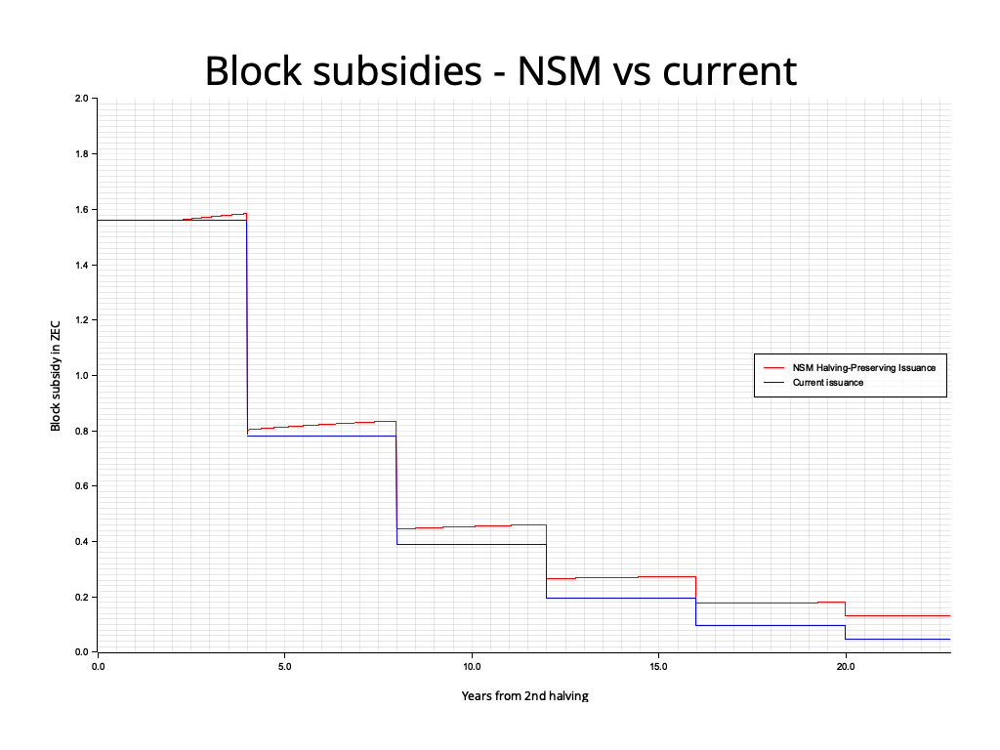
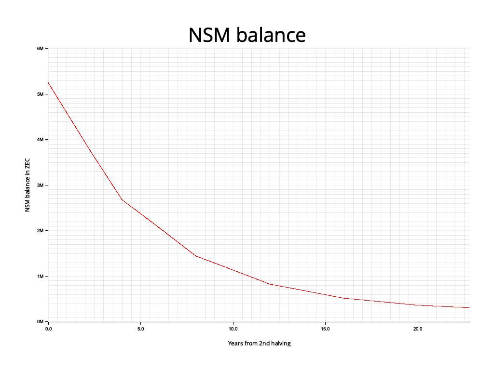

ZIP: 237
Title: Network Sustainability Mechanism: Halving-Preserving Issuance
Owners: Judah Caruso <judah@shieldedlabs.net>
Original-Authors: Nathan Wilcox
Jason McGee
Zooko Wilcox
Mark Henderson
Tomek Piotrowski
Mariusz Pilarek
Paul Dann
Credits: Conrado Gouvea
Status: Draft
Category: Consensus
Created: 2026-08-19
License: BSD-2-Clause
Discussions-To: <https://github.com/zcash/zips/issues/1353>
Pull-Request: <https://github.com/zcash/zips/pull/1354>
The key words “MUST” and “MUST NOT” in this document are to be interpreted as described in BCP 14 1 when, and only when, they appear in all capitals.
The term “network upgrade” in this document is to be interpreted as described in ZIP 200. 2
The character § is used when referring to sections of the Zcash Protocol Specification. 3
The terms “Mainnet” and “Testnet” are to be interpreted as described in § 3.12 ‘Mainnet and Testnet’. 4
The symbol “\(\,\cdot\,\)” means multiplication, as described in § 2 ‘Notation’. 5
“ZEC/TAZ” refers to the native currency of Zcash on a given network, i.e. ZEC on Mainnet and TAZ on Testnet.
The terms “Block Subsidy” and “Issuance” are to be interpreted as described in ZIP 233. 6
Let \(\mathsf{PostBlossomHalvingInterval}\) be as defined in 7, and \(\mathsf{PostNU7HalvingInterval}\) be as defined in ZIP 218. 8
\(\mathsf{MAX\_MONEY}\kern-0.05em\textsf{,}\) as defined in § 5.3 ‘Constants’ 9, is the total ZEC/TAZ supply cap measured in zatoshi, corresponding to 21,000,000 ZEC. This is slightly larger than the supply cap for the current issuance mechanism, but is the value used in existing critical consensus checks.
“Issued Supply” - The Issued Supply at a given height of a block chain is the total ZEC/TAZ value in all chain value pool balances at that height, as calculated by \(\mathsf{IssuedSupply}(\mathsf{height})\) defined in § 4.17 ‘Chain Value Pool Balances’. 10
“Money Reserve” - The Money Reserve at a given height of a block chain is the total ZEC/TAZ value remaining to be issued, as calculated by \(\mathsf{MAX\_MONEY} - \mathsf{IssuedSupply}(\mathsf{height})\kern-0.05em\textsf{.}\)
“Scheduled Block Subsidy” - The block subsidy given by the existing halving schedule, i.e. \(\mathsf{BlockSubsidy}(\mathsf{height})\) as defined in § 7.8 ‘Calculating Block Subsidy, Funding Streams, Lockbox Disbursement, and Founders' Reward’ 11 prior to this ZIP, renamed \(\mathsf{ScheduledBlockSubsidy}(\mathsf{height})\) in the Specification below.
“NSM Value Balance” - The total ZEC/TAZ that has been removed from circulation and not yet reissued: funds removed via ZIP 233 6, plus block subsidy and fees left unclaimed by coinbase transactions prior to NU6 12. It is not part of the Issued Supply. \(\mathsf{NSMValueBalance}(\mathsf{height})\) is defined in the Specification below.
This ZIP proposes a change to how nodes calculate the block subsidy.
The step function around the 4-year halving intervals inherited from Bitcoin is retained unchanged. In addition, each block issues a fixed portion of the current NSM Value Balance (the ZEC/TAZ that has been removed from circulation or left unclaimed), so that such funds are reissued along a smooth curve on top of the existing schedule.
The new issuance scheme is identical to the existing schedule whenever no ZEC/TAZ has been removed from circulation or left unclaimed, and retains the existing supply cap (which is below \(\mathsf{MAX\_MONEY}\kern-0.15em\) ). It is proposed as an alternative to ZIP 234 13, from which its structure and much of its text are adapted.
The current block reward halving schedule is fixed and does not provide a way to “recycle” funds removed from circulation via ZIP 233 into future issuance. Once scheduled issuance ends, the network becomes reliant on transaction fees for the security budget.
Key Objectives:
This ZIP is an alternative to ZIP 234 13 that differs only in Key Objective 6. ZIP 234 replaces the halving schedule with a smooth curve in order to reissue funds removed from circulation; this ZIP shows that reissuance does not require that change. The halving schedule is a long-standing, widely understood property of Zcash on which block subsidy recipients and the wider community rely, and this ZIP allows the question of whether to change it to be decided on its own merits.
This NSM-based issuance scheme preserves the core aspects of Zcash’s issuance policy, the halving schedule, and the 21-million-coin cap. Critically, it establishes the intended path for ZEC that has been voluntarily removed from circulation, as well as transaction fees that are deliberately redirected into the reserve: these funds are automatically and algorithmically reissued over future block subsidies, ensuring they benefit the network’s long-term security.
Reissuing funds removed from circulation while preserving halvings is possible using an exponential decay formula applied to the NSM Value Balance that satisfies the following requirements:
\(\mathsf{LN2\_SCALED} = 6\_931\_680\_000\)
\(\mathsf{HalvingInterval}(\mathsf{height}) =\) the number of blocks in a halving period at \(\mathsf{height}\kern-0.05em\textsf{:}\) \(\mathsf{PostNU7HalvingInterval}\) if ZIP 218 8 is deployed and \(\mathsf{IsNU7Activated}(\mathsf{height})\) as defined there, otherwise \(\mathsf{PostBlossomHalvingInterval}\kern-0.05em\textsf{.}\)
\(\mathsf{BLOCK\_SUBSIDY\_FRACTION}(\mathsf{height}) = \mathsf{floor}(\mathsf{LN2\_SCALED} / \mathsf{HalvingInterval}(\mathsf{height})) / 10\_000\_000\_000\)
This is \(4126 / 10\_000\_000\_000 = 0.0000004126\) with \(\mathsf{PostBlossomHalvingInterval} = 1\_680\_000\kern-0.05em\textsf{,}\) the value specified by ZIP 234 13, and \(1375 / 10\_000\_000\_000\) with \(\mathsf{PostNU7HalvingInterval} = 5\_040\_000\kern-0.05em\textsf{.}\) See the BLOCK_SUBSIDY_FRACTION section below.
\(\mathsf{INITIAL\_NSM\_VALUE\_BALANCE} =\) the block subsidy and fees left unclaimed by coinbase transactions before NU6, in zatoshi, which seeds the NSM Value Balance at NU7 activation. Since ZIP 236 12 requires coinbase transactions to claim their full value, this is the fixed amount
\(\sum_{\mathsf{h}=0}^{\mathsf{H}} \mathsf{ScheduledBlockSubsidy}(\mathsf{h}) - \mathsf{IssuedSupply}(\mathsf{H})\)
for any \(\mathsf{H}\) from the last pre-NU6 height up to \(\mathsf{NU7ActivationHeight} - 1\kern-0.05em\textsf{.}\) On Mainnet, with \(\mathsf{H} = 2\_726\_399\kern-0.05em\textsf{,}\) the sum is exactly 15,750,000 ZEC and the value is approximately 350.8 ZEC (TODO for ZIP owner: state the exact zatoshi value from a full node, and likewise for Testnet with \(\mathsf{H} = 2\_975\_999\kern-0.15em\) ).
\(\mathsf{DEPLOYMENT\_BLOCK\_HEIGHT} =\) the height at which reissuance begins on the relevant network, as assigned by the NU7 deployment ZIP 14 (named \(\mathsf{NSM\_REISSUANCE\_HEIGHT}\) in 15). It MUST be no earlier than the NU7 activation height, and MUST be at least 1.
In § 7.8 ‘Calculating Block Subsidy, Funding Streams, Lockbox Disbursement, and Founders' Reward’ 11:
Apply the changes of ZIP 218 8 first, if it is deployed. Then rename the resulting function \(\mathsf{BlockSubsidy}(\mathsf{height})\) to \(\mathsf{ScheduledBlockSubsidy}(\mathsf{height})\kern-0.05em\textsf{,}\) leaving its definition unchanged.
Add the following definition, where \(\mathsf{NSMValueBalance}\) is as defined in § 4.17 ‘Chain Value Pool Balances’ 10 below:
\[\mathsf{AdditionalBlockSubsidy}(\mathsf{height}) := \begin{cases} 0, & \text{if } \mathsf{height} < \mathsf{DEPLOYMENT\_BLOCK\_HEIGHT} \\ \mathsf{ceiling}(\mathsf{BLOCK\_SUBSIDY\_FRACTION}(\mathsf{height}) \cdot \mathsf{NSMValueBalance}(\mathsf{height} - 1)), & \text{otherwise} \end{cases}\]
Define \(\mathsf{BlockSubsidy}(\mathsf{height})\) as:
\(\mathsf{BlockSubsidy}(\mathsf{height}) := \mathsf{ScheduledBlockSubsidy}(\mathsf{height}) + \mathsf{AdditionalBlockSubsidy}(\mathsf{height})\)
Add \(\mathsf{LN2\_SCALED}\) and \(\mathsf{INITIAL\_NSM\_VALUE\_BALANCE}\) to § 5.3 ‘Constants’ 9, and \(\mathsf{HalvingInterval}\) and \(\mathsf{BLOCK\_SUBSIDY\_FRACTION}\kern-0.05em\textsf{,}\) as given under Parameters above, to § 7.8.
All other uses of \(\mathsf{BlockSubsidy}(\mathsf{height})\) in the protocol specification (\(\mathsf{FoundersReward}\kern-0.05em\textsf{,}\) \(\mathsf{fsValue}\) and hence \(\mathsf{totalDeferredOutput}\kern-0.05em\textsf{,}\) \(\mathsf{MinerSubsidy}\kern-0.05em\textsf{,}\) and the total input value of a coinbase transaction in § 7.1.2 16) are unchanged and refer to the redefined function; in particular, funding streams receive their fixed percentage of the total (scheduled plus additional) block subsidy. Note that \(\mathsf{BlockSubsidy}(\mathsf{height})\) now depends on the NSM Value Balance after block \(\mathsf{height} - 1\kern-0.05em\textsf{,}\) and not only on \(\mathsf{height}\kern-0.05em\textsf{.}\)
In § 4.17 ‘Chain Value Pool Balances’ 10, add the following definition. Let \(\mathsf{removed}(\mathsf{height})\) be the total value removed from circulation in the block at \(\mathsf{height}\) by any deployed mechanism (such as ZIP 233 6 or ZIP 235 17), or 0 if none is deployed, and \(\mathsf{NU7ActivationHeight}\) be the NU7 activation height on the relevant network. 14
\[\mathsf{NSMValueBalance}(\mathsf{height}) := \begin{cases} 0, & \text{if } \mathsf{height} < \mathsf{NU7ActivationHeight} - 1 \\ \mathsf{INITIAL\_NSM\_VALUE\_BALANCE}, & \text{if } \mathsf{height} = \mathsf{NU7ActivationHeight} - 1 \\ \mathsf{NSMValueBalance}(\mathsf{height} - 1) - \mathsf{AdditionalBlockSubsidy}(\mathsf{height}) + \mathsf{removed}(\mathsf{height}), & \text{otherwise} \end{cases}\]
The NSM Value Balance is tracked as consensus state alongside the chain value pools. It is not a spendable chain value pool and is not included in \(\mathsf{IssuedSupply}(\mathsf{height})\kern-0.05em\textsf{:}\) it counts ZEC/TAZ that is not in circulation, consistent with ZIP 233 6, which subtracts removed funds from the issued supply. Reissuance moves value from the NSM Value Balance into the Issued Supply through the block subsidy.
Add the consensus rule:
[NU7 onward] If \(\mathsf{NSMValueBalance}(\mathsf{height})\) would become negative in the block chain created as a result of accepting a block at \(\mathsf{height}\kern-0.05em\textsf{,}\) then all nodes MUST reject the block as invalid.
All of these changes apply identically to Mainnet and Testnet.
Because the formula reduces to the existing schedule whenever the NSM Value Balance is zero, the rule itself places no constraint on the deployment height. The only change at deployment is the reissuance of the NSM Value Balance at that point (\(\mathsf{INITIAL\_NSM\_VALUE\_BALANCE}\) plus anything removed from circulation since NU7 activation) at \(\mathsf{BLOCK\_SUBSIDY\_FRACTION}\) per block. For example, if a total of 100,000 ZEC were removed from circulation prior to activation, then at activation the issuance would be larger than the Scheduled Block Subsidy by \(100\_000\textsf{ ZEC} \cdot \mathsf{BLOCK\_SUBSIDY\_FRACTION}\kern-0.05em\textsf{,}\) which we calculate equals \(0.04126\) ZEC. This example is chosen to demonstrate that a very large amount removed from circulation (much larger than expected) would elevate issuance by a relatively small amount, satisfying Requirement 5.
Since NU6, coinbase transactions are required to claim the full miner subsidy and fees 12, so the part of the NSM Value Balance not attributable to funds removed from circulation is a fixed historical amount, \(\mathsf{INITIAL\_NSM\_VALUE\_BALANCE}\kern-0.05em\textsf{:}\) on Mainnet approximately 350.8 ZEC, reissued from deployment at an initial rate of about 0.00014 ZEC per block on the 75-second block schedule, or 0.00005 ZEC per block under ZIP 218, about 0.17 ZEC per day either way.
Let \(\mathsf{IntendedFractionRemainingAfterOneHalvingPeriod} = 0.5\kern-0.05em\textsf{,}\) i.e. the NSM Value Balance should halve over the same period as the block subsidy does. The fraction is therefore stated as a function of the halving schedule rather than as a constant, so that it keeps this property whatever the block target spacing:
\((1 - \mathsf{BLOCK\_SUBSIDY\_FRACTION}(\mathsf{height}))^{\mathsf{HalvingInterval}(\mathsf{height})} \approx \mathsf{IntendedFractionRemainingAfterOneHalvingPeriod}\)
Solving gives a fraction of approximately \(\ln 2 / \mathsf{HalvingInterval}(\mathsf{height})\kern-0.05em\textsf{.}\) \(\mathsf{LN2\_SCALED}\) is \(10^{10} \cdot \ln 2 = 6\_931\_471\_806\) rounded up to a multiple of \(\mathsf{PostBlossomHalvingInterval}\kern-0.05em\textsf{,}\) so that on the 75-second schedule the numerator is exactly the 4126 of ZIP 234 13, which satisfies the approximation within \(\pm 0.003\%\kern-0.05em\textsf{.}\) ZIP 218 8 does not change \(\mathsf{PostBlossomHalvingInterval}\kern-0.05em\textsf{;}\) it defines a separate \(\mathsf{PostNU7HalvingInterval} = 5\_040\_000\) for its 25-second blocks, and with that interval the numerator is 1375. A numerator fixed at 4126 would instead halve the balance about every 1.33 years under ZIP 218, because it would apply three times as often.
This implies that after one halving period around half of the NSM Value Balance will have been issued as additional block subsidies, thus satisfying Requirement 4.
The largest possible value of the NSM Value Balance is less than \(\mathsf{MAX\_MONEY}\kern-0.05em\textsf{,}\) in the theoretically possible case that all issued funds are removed from circulation. If this happened, the largest interim product in the block subsidy calculation would be less than \(\mathsf{MAX\_MONEY} \cdot 4126\kern-0.05em\textsf{,}\) since the numerator is at most 4126.
This uses at most 62.91 bits, which is just under the 63-bit limit for signed two’s complement 64-bit integer amount types.
The numerator could be brought closer to the limit by using a larger denominator, but the difference in the amount issued would be very small. So we chose a power-of-10 denominator for simplicity.
The following graph compares issuance for the current halving-based step function vs this ZIP, assuming 100 ZEC per day is removed from circulation from activation (assumed at height 3,687,123 for illustration). With no removals (and every subsidy claimed in full) the two lines coincide.

The graph below shows the balance of the Money Reserve assuming this ZIP is implemented, under the same removal schedule.

A fork of the NSM Simulator allows us to simulate the effects of this ZIP on the Money Reserve and the block subsidy, as well as generate plots like the ones above. Assuming that 100 ZEC per day is removed from circulation from activation, this fragment of its output:
Halving 3 at block 4406400:
NSM subsidies: 138028653049305 (~ 1380286.530 ZEC, 0.80365268 to 0.83585478 ZEC per block)
legacy subsidies: 131250000000000 (~ 1312500.000 ZEC, 0.78125000 ZEC per block)
difference: 6778653049305 (~ 67786.530 ZEC), NSM/legacy: 1.0516
removed in period: 14583333333333 (~ 145833.333 ZEC)
shows that the difference between this and the existing halving schedule during the first full halving period after activation consists almost entirely of the reissuance of funds removed from circulation (the remainder being reissuance of the pre-NU6 shortfall); with no ZEC removed (and every subsidy claimed in full) the difference is exactly 0 at every height.
Future protocol changes may not increase the payout rate of the NSM Value Balance to a reasonable approximation beyond the one-halving-period half-life constraint.
This ZIP is proposed to activate with Network Upgrade 7, 14 with reissuance beginning at \(\mathsf{DEPLOYMENT\_BLOCK\_HEIGHT}\kern-0.05em\textsf{.}\) It MUST NOT be deployed together with ZIP 234. 13 It does not depend on ZIP 233 (“NSM: Removing Funds From Circulation” 6): funds removed from circulation by ZIP 233, or by any other mechanism, are credited to the NSM Value Balance if and when that mechanism is deployed.
Information on BCP 14 — “RFC 2119: Key words for use in RFCs to Indicate Requirement Levels” and “RFC 8174: Ambiguity of Uppercase vs Lowercase in RFC 2119 Key Words” ↩︎
Zcash Protocol Specification, Version 2025.6.2 [NU6.1] or later ↩︎
Zcash Protocol Specification, Version 2025.6.2 [NU6.1]. Section 3.12: Mainnet and Testnet ↩︎
Zcash Protocol Specification, Version 2025.6.2 [NU6.1]. Section 2: Notation ↩︎
ZIP 233: Network Sustainability Mechanism: Removing Funds From Circulation ↩︎
Zcash Protocol Specification, Version 2025.6.2 [NU6.1]. Section 7.7.3: Difficulty Adjustment ↩︎
Zcash Protocol Specification, Version 2025.6.2 [NU6.1]. Section 5.3: Constants ↩︎
Zcash Protocol Specification, Version 2025.6.2 [NU6.1]. Section 4.17: Chain Value Pool Balances ↩︎
Zcash Protocol Specification, Version 2025.6.2 [NU6.1]. Section 7.8: Calculating Block Subsidy, Funding Streams, Lockbox Disbursement, and Founders' Reward ↩︎
ZIP 234: Network Sustainability Mechanism: Issuance Smoothing ↩︎
draft-arya-deploy-nu7: Deployment of the NU7 Network Upgrade ↩︎
draft-valargroup-deploy-nu7: NU7 deployment draft (zcash/zips#1363) ↩︎
Zcash Protocol Specification, Version 2025.6.2 [NU6.1]. Section 7.1.2: Transaction Consensus Rules ↩︎